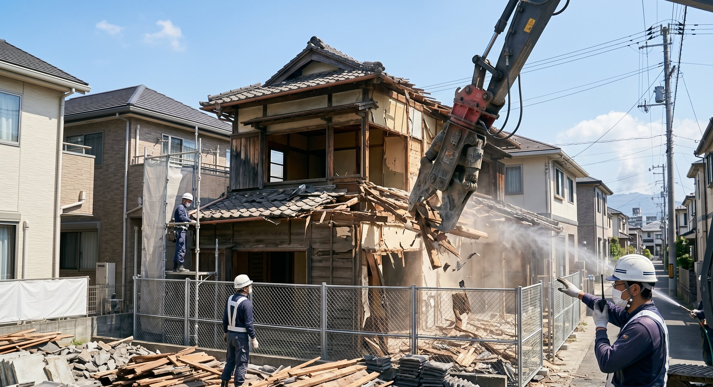
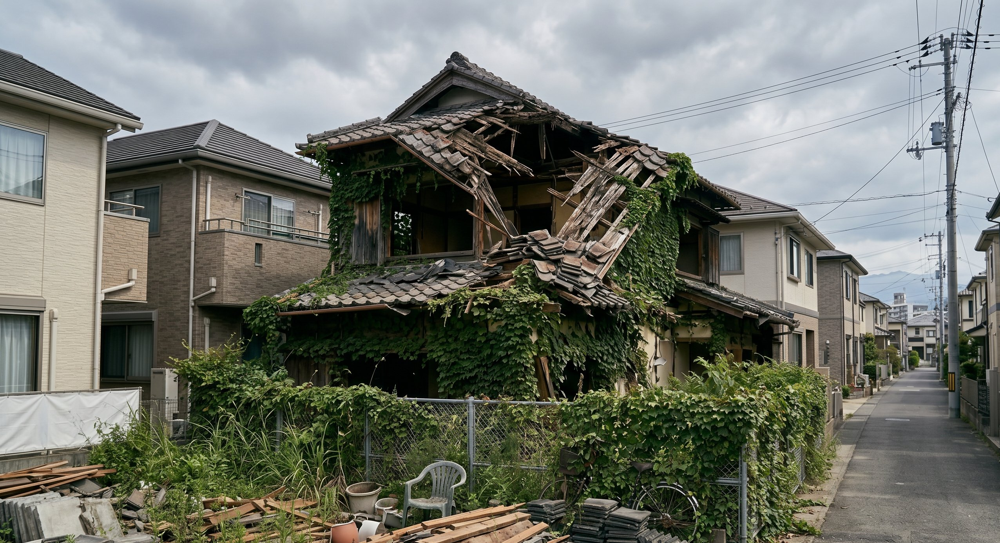

解体費用は建物の構造・広さ・立地によって大きく異なります
「老朽化した空き家を解体したいけど、費用がどれくらいかかるのか不安」という声はよく聞かれます。解体には決して安くない費用がかかりますが、鹿児島では補助金制度を活用することで費用を抑えられる場合があります。この記事では解体費用の相場と補助金の活用方法を解説します。
空き家解体費用の相場
解体費用は建物の構造・延床面積・立地条件（重機が入れるかどうかなど）によって大きく変わります。以下はあくまでも目安です。
| 構造 | 坪単価の目安 | 30坪の場合の概算 |
|---|---|---|
| 木造（戸建て） | 3〜5万円/坪 | 90〜150万円 |
| 鉄骨造 | 5〜7万円/坪 | 150〜210万円 |
| RC造（鉄筋コンクリート） | 6〜8万円/坪 | 180〜240万円 |
鹿児島の戸建て空き家は木造が多く、一般的な広さ（25〜35坪）であれば80〜180万円程度が目安になります。ただし、アスベストが含まれている場合や、重機が入れない狭小地の場合は追加費用がかかります。
解体前に確認すべきこと
解体後の土地をどう使うか
空き家を解体すると、前述のように固定資産税の住宅用地特例が解除されます（最大6倍に増加）。解体後すぐに土地を売却するか活用するかの計画を立ててから解体することが大切です。
隣地との境界確認
解体工事の前に、隣地との境界を明確にしておきましょう。境界が不明確なまま解体すると、後でトラブルになることがあります。

鹿児島で使える解体補助金制度
鹿児島県内の多くの市町村では、老朽危険空き家の解体に対して補助金を設けています。
- 老朽化が著しく、保安上危険な状態にある空き家であること
- 所有者（または相続人）が申請すること
- 解体後の土地を一定期間は更地として維持すること
- 市区町村税の滞納がないこと
補助金額は市町村によって異なりますが、解体費用の1/3〜1/2程度、上限20〜50万円が一般的な範囲です。鹿児島市では「危険空家等除却支援事業補助金」が設けられており、条件を満たせば最大50万円の補助が受けられる場合があります（年度により変更の可能性あり）。
解体と売却、どちらが得か
「解体してから更地で売る」か「古家付きのまま売る」かは、物件の状況によって異なります。一般的には更地の方が売りやすい傾向がありますが、解体費用を負担してもそれを上回る売却価格の上昇が見込めるかが判断のポイントです。TAMARIEでは解体前の査定も行っておりますので、まずご相談ください。